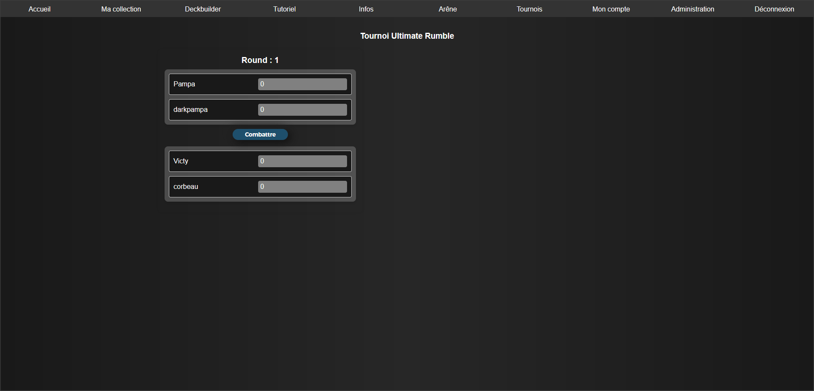
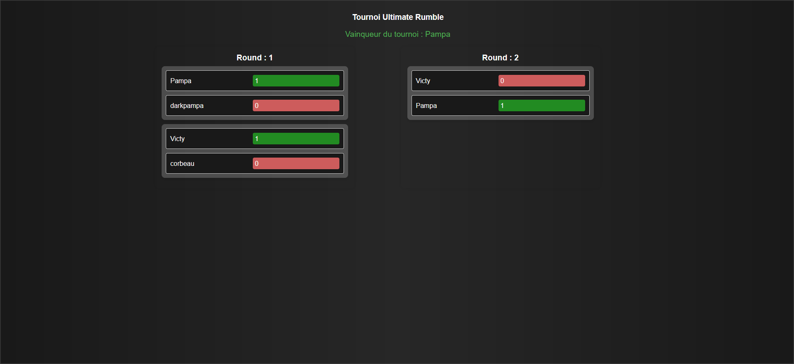
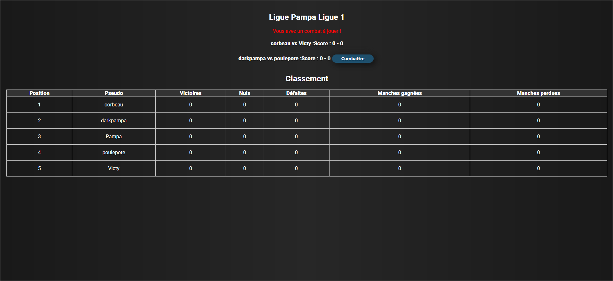
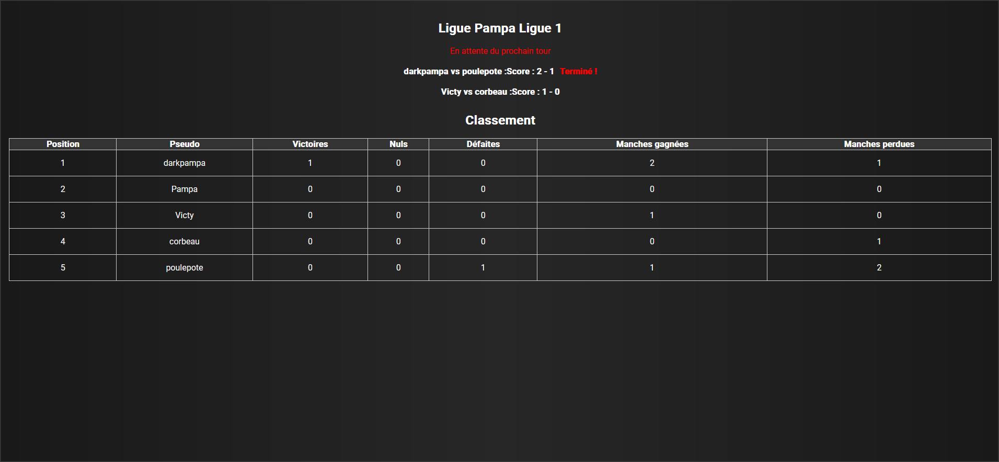
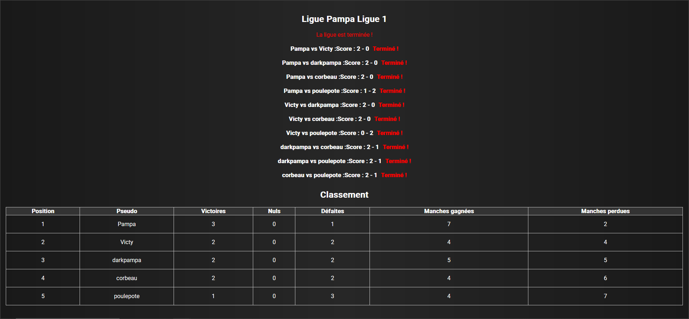
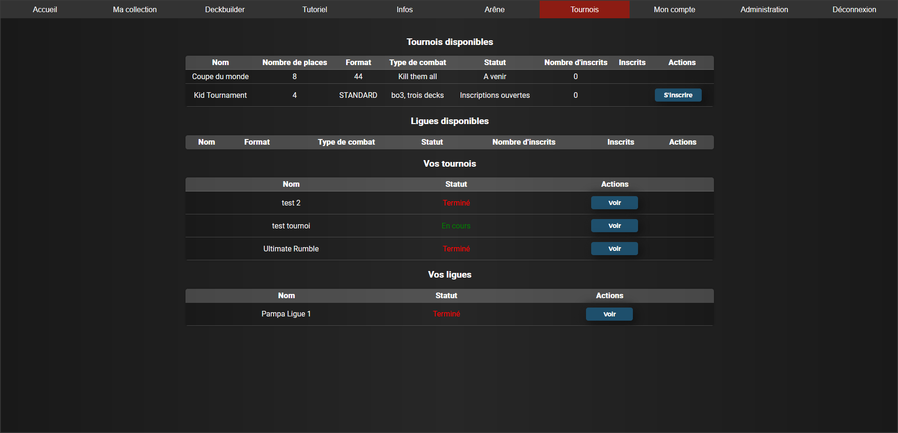
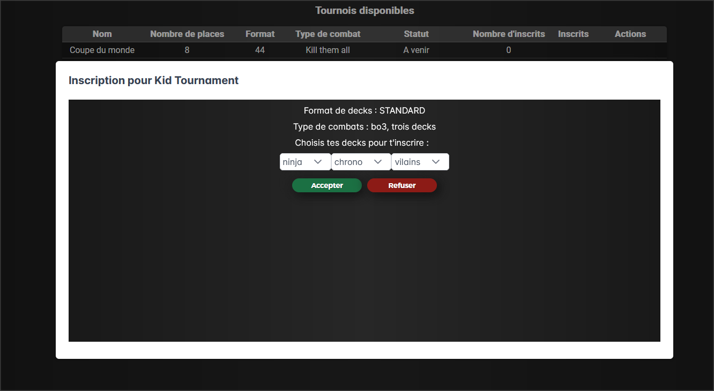
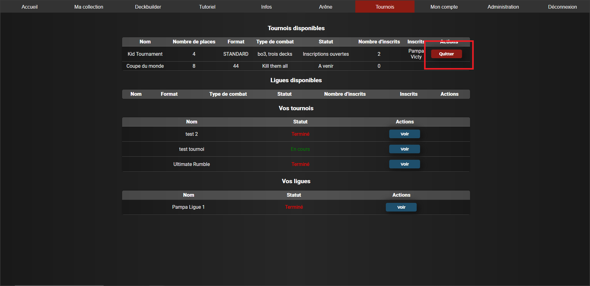

Tournois et ligues
Il existe deux types de compétitions jouable dans les Pampa Cards, les tournois et les ligues. Un tournoi est composé d'un nombre pair de joueurs qui vont s'affronter dans des duels éliminatoires.

Le premier round d'un tournoi
Lorsque tous les affrontements d'un round sont terminés, les joueurs gagnants sont répartis dans de nouveaux affrontements du round suivant, jusqu'à avoir un vainqueur en finale.

Après avoir gagné leur premier tour, Pampa et Victy se rencontrent en finale
Une ligue peut être jouée avec n'importe quel nombre de joueurs. Le principe est simple : vous affronterez chacun des autres joueurs et un classement sera établi selon vos victoires / défaites.

Tableau de ligue avant les premiers combats
En cas de nombre de joueur impair, vous n'aurez pas d'affrontement lors de certains tours. Dans l'exemple ci-dessus, Pampa n'a pas d'affrontement ce tour. Il aura des affrontements aux tours suivants.
Le classement se met à jour en direct pour informer tous les joueurs de l'avancée de chaque tour.

Le classement au milieu d'un tour. Un affrontement est terminé, un autre est encore en cours.
Lorsque chaque joueur a affronté les autres, la ligue est terminée et le classement est définitif !

Fin de ligue
Rejoindre un tournoi / une ligue
Pour voir les compétitions et leurs états, dirigez vous vers l'onglet "Tournois" du menu.

Les status des tournois et ligues sont :
- A venir : compétition annoncée mais pas encore d'inscription possible
- Inscriptions ouvertes : vous pouvez vous inscrire en sélectionnant les decks à enregistrer pour cette compétition

- Inscriptions fermées : plus possible de s'inscrire
- En attente : la compétition est en train de se lancer
- En cours : la compétition est en cours, vous pouvez voir le détail dans Vos tournois / Vos ligues si vous êtes inscrit
- Terminé : la compétition est finie. Vous pouvez toujours voir le détail / classement dans Vos tournois / Vos ligues
Tant qu'une compétition est en inscription ouverte, vous pouvez vous désinscrire en cliquant simplement sur le bouton "Quitter"

Formats des affrontements
Les affrontements en tournois et ligues peuvent être en :
- Bo1 : une seule partie
- Bo3, deck unique : un Best of Three joué avec un seul deck
- Bo3, trois decks : un Bo3 dans lequel on sélectionne à chaque partie un des trois decks enregistrés pour la compétition
- Bo3, trois decks Survivor : comme le précédent, mais le vainqueur d'une partie doit garder le même deck pour la partie suivante (sauf si changement d'adversaire)
- Kill Them All : Trois decks enregistrés. Si on gagne une partie, on élimine le deck joué par l'adversaire pour cet affrontement. Il faut éliminer tous les decks adverses.
- Kill Them All Survivor : Idem mais avec la règle du Survivor : on garde le deck gagnant pour la prochaine partie (sauf si changement d'adversaire)
Départage en cas d'égalités
Dans une ligue, un affrontement peut simplement se terminer par une égalité. On ajoutera 0.5 victoire et 0.5 défaite dans le classement pour chacun.
Pour les tournois, si un affrontement se termine avec un score global menant à une égalité, voici le détail de départage entre les joueurs :
On compare d’abord les scores des parties de l'affrontement qui vient d’être joué. Si par exemple Pampa remporte la première partie 20 contre 15, Victy remporte la deuxième partie 18 contre 15 et la troisième partie se termine par une égalité, c'est Pampa qui l'emportera car la somme de ces scores est supérieure à celle de Victy.
Sinon
Si les deux joueurs sont en égalité parfaite de somme de scores pour les parties de l'affrontement en cours :
On regarde les tours précédents du tournoi s'il y en a. On calcul la somme des différences de score entre joueur et adversaire sur les tours précédents. Si un joueur a eu au total un plus grand écart de score sur les tours précédents en sa faveur, il l'emporte.
Sinon
C’est le deuxième joueur de la dernière partie qui l'emporte (le joueur 1 étant considéré comme ayant un léger avantage).